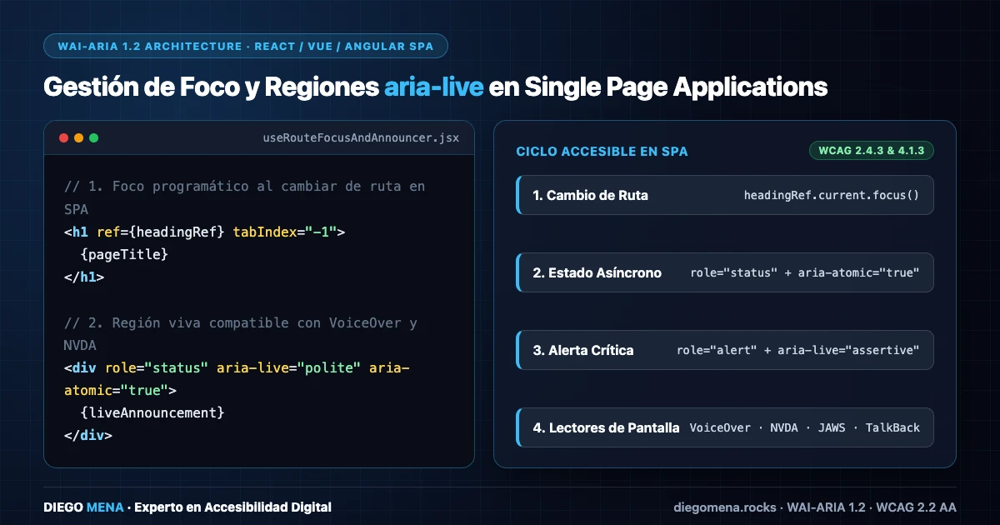

Mejores prácticas para implementar ARIA en Single Page Applications
Un recorrido técnico sobre el manejo del foco, regiones en vivo (aria-live) y notificaciones asíncronas para garantizar una navegación sin barreras en React y Angular.

Las Single Page Applications (SPA) ofrecen experiencias fluidas, pero destruyen la semántica nativa del navegador al cambiar de ruta. Al no recargar la página, los lectores de pantalla se quedan en silencio tras hacer clic en un enlace, desorientando completamente al usuario.
Gestión del Foco Programático
El primer paso es asegurar que el foco del teclado se mueva lógicamente cuando la vista cambia. Una técnica recomendada es enfocar el contenedor principal o el <h1> de la nueva vista montada.
import { useEffect, useRef } from 'react';
import { useLocation } from 'react-router-dom';
export function useRouteChangeFocus() {
const location = useLocation();
const headingRef = useRef(null);
useEffect(() => {
if (headingRef.current) {
headingRef.current.focus();
}
}, [location.pathname]);
return headingRef;
}Asegúrate de que el elemento que va a recibir el foco (si no es un elemento interactivo por defecto) tenga un atributo tabindex="-1" para que pueda recibir el foco mediante JavaScript sin alterar la secuencia natural de tabulación.
Regiones en Vivo (aria-live)
Las notificaciones asíncronas como "Guardado con éxito" o alertas de error no son leídas automáticamente a menos que las marques como regiones en vivo. Usar aria-live="polite" es ideal para notificaciones informativas, mientras que aria-live="assertive" o role="alert" debe reservarse para errores críticos que exigen la atención inmediata del usuario.
Modales y Trampas de Foco (Focus Trap)
Abrir un componente modal en una SPA requiere, por norma, crear una "trampa de foco". Esto significa que la tabulación debe ciclar internamente dentro del modal y no permitir que el usuario interactúe con el fondo oscurecido por error. Además, la tecla Escape siempre debe cerrar la ventana emergente.